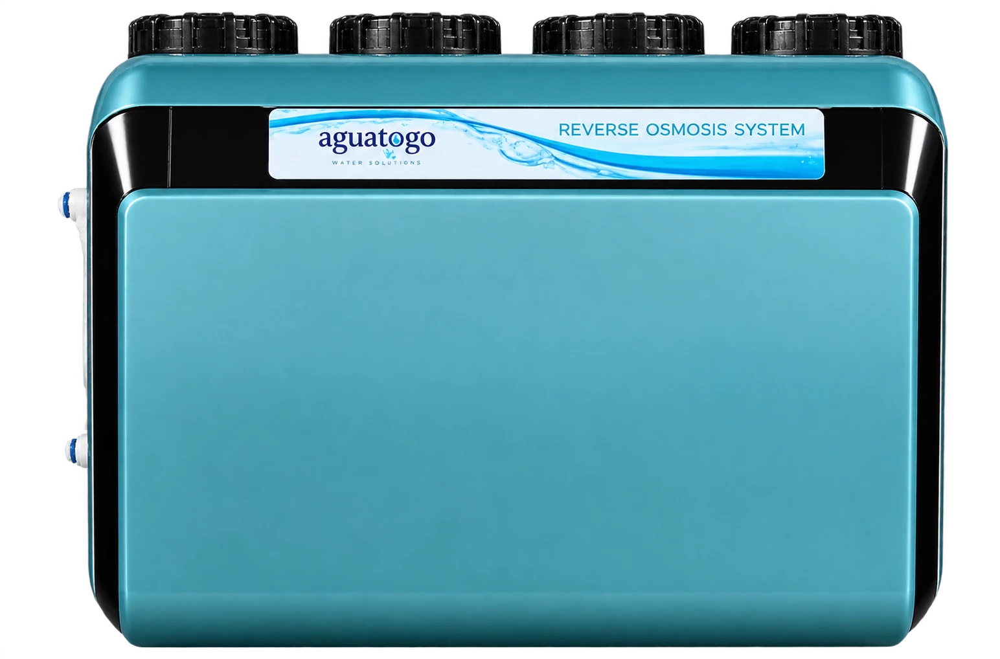

Toca para ver +Sistema Ósmosis Compacto
Equipo de ósmosis inversa tipo caja: bomba, membrana, mineralizador y todas las etapas integradas en una sola carcasa. Más caudal y agua mineralizada.
CAJA COMPACTACON BOMBAMINERALIZADOR
$220